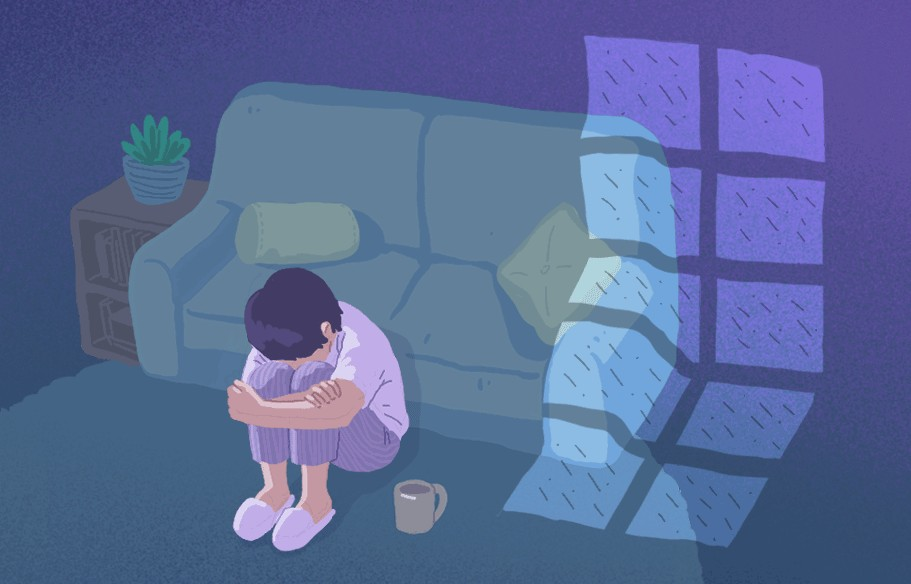

신뢰성 높은 마인드 헬퍼의 우울 감정 테스트
당신의 우울 감정 지수는 몇 점 ?

우울증 자가진단 테스트 결과
나의 우울증 지수
2점
0 ~ 9점: 우울하지 않은 상태
우울한 게 뭐죠?! 와우! 축하해요!
당신은 보기
드물게 ‘전혀 우울하지 않은’ 사람!! :D
자존감, 스트레스,
불안….요즘 내 마음이 더 궁금하다면 지금 무료로 테스트해보세요!
본 우울증 자가진단 검사는 주 1회 평가를 권장하며, 결과에서 ‘심한
우울 상태'에 대한 염려가 2주 이상 나올 경우 전문가와의 상의를
권장합니다. 입시와 같이 환경적으로 부정적인 상황에 처한 경우 테스트
결과가 상향되어 나올 수 있습니다.